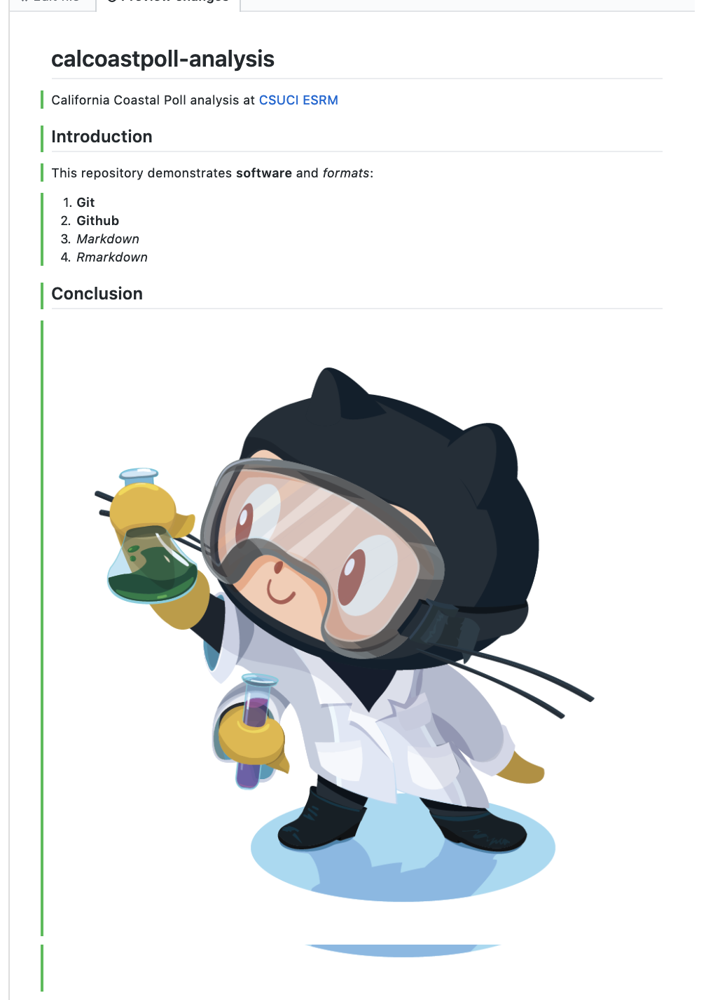

Lesson 6 nps-demo
Wrangling data with R.
6.1 Introduction
This repository demonstrates software and formats:
- Git
- Github
- Markdown
- Rmarkdown
6.2 Conclusion
 ```
```
Now click on the Preview changes to see the markdown rendered as HTML:
Notice the syntax for:
- numbered list gets automatically sequenced:
1.,1. - headers get rendered at multiple levels:
#,## - link:
[](http://...) - image:
 - italics:
_word_ - bold:
**word**
See Mastering Markdown · GitHub Guides and add some more personalized content to the README of your own, like a bulleted list or blockquote.
6.3 Create index.html
By default index.html is served up. Go ahead and create a new file named index.html with the following basic HTML:
<!DOCTYPE html>
<html>
<body>
<h1>My First Heading</h1>
<p>My first paragraph.</p>
</body>
</html>You’ll be prompted to clone this repository into a folder on your local machine.
See GitHub Desktop User Guides for more. You could also do this from the Bash Shell for Git with the command git clone https://github.com/USER/REPO.git, replacing USER with your Github username and REPO with my_project. Or you can use the Github Desktop App menu File -> Clone Repository…
6.4 Create RStudio Project with Git Repository
Next, you will clone the repository onto your local machine using RStudio. I recommend creating it in a folder github under your user or Documents folder.
Open RStudio and under the menu File -> New Project… -> Version Control -> git and enter the URL with the .git extension (also available from the repository’s Clone button):
If it all works correctly then you should see the files downloaded and showing up in the Files pane of RStudio. If RStudio is configured correctly to work with Git, then you should also see a Git pane.
6.5 Create index.Rmd in Rmarkdown
Back in RStudio, let’s create a new Rmarkdown file, which allows us to weave markdown text with chunks of R code to be evaluated and output content like tables and plots.
File -> New File -> Rmarkdown… -> Document of output format HTML, OK.

You can give it a Title of “My Project”. After you click OK, most importantly File -> Save as index (which will get named with the filename extension index.Rmd).
Some initial text is already provided for you. Let’s go ahead and “Knit HTML”.
Notice how the markdown is rendered similar to as before + R code chunks are surrounded by 3 backticks and {r LABEL}. These are evaluated and return the output text in the case of summary(cars) and the output plot in the case of plot(pressure).
Notice how the code plot(pressure) is not shown in the HTML output because of the R code chunk option echo=FALSE.
Before we continue exploring Rmarkdown, visit the Git pane, check all modified (M) or untracked (?) files, click Commit, enter a message like “added index” and click the “Commit” button. Then Push (up green arrow) to push the locally committed changes on your lapto up to the Github repository online. This will update https://github.com/USER/nps-demo, and now you can also see your project website with a default index.html viewable at http://USER.github.io/nps-demo
For more on Rmarkdown:
A more advanced topic worth mentioning is dealing merge conflicts
6.6 Exercise: Intertidal Sites Dataset
Gil Rilov shared the following dataset for us to play with:
Please download and open this dataset. Your task is to investigate this dataset and prepare it for submission to OBIS.
6.6.1 Task: Provide Excel cell ranges for how you would divide data into tables?
For reading and wrangling data in R, please see cheat sheets and resources mentioned in: